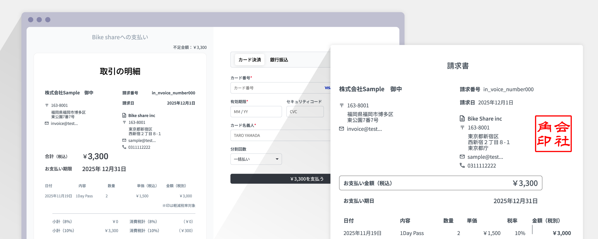
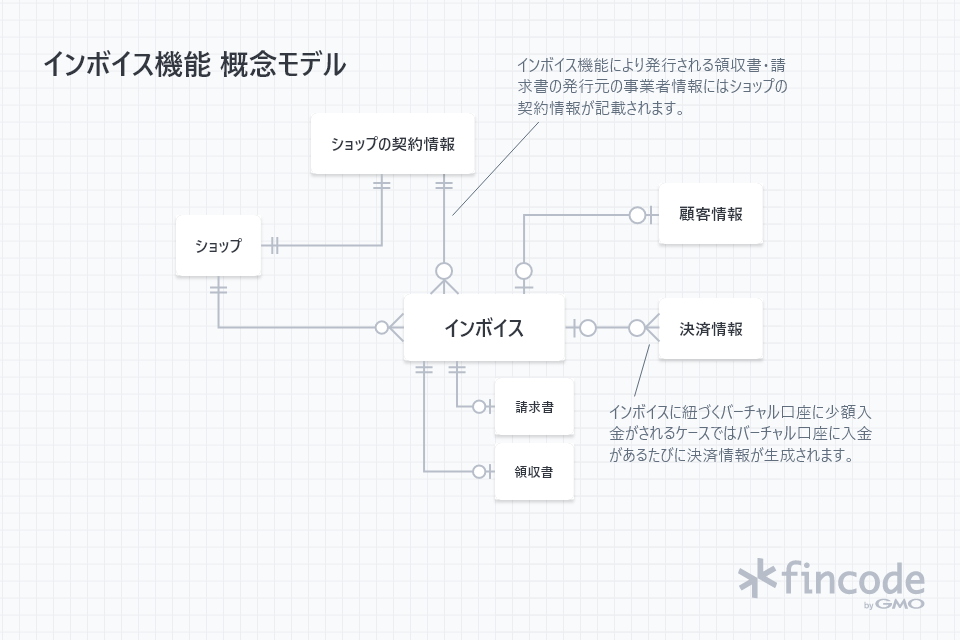

什么是账单功能

账单功能可在 fincode 中签发账单，并在签发时生成支付页面，由买家在该页面完成付款。付款后会自动签发收据，买家可随时下载。
通过此功能，无需自行开发账单和支付页面，即可在 fincode 控制面板或通过 API 管理从签发账单到完成付款的流程。
在 fincode 控制面板的商户设置中登记日本合规发票开具企业登记编号后，即可签发符合 2023 年 10 月 1 日开始实施的日本“合规发票制度”的账单和收据。
账单功能与其他功能的比较
账单功能和支付 API、跳转式支付 URL（邮件链接）一样，均可接受单笔支付。请比较各项功能后选择适合的方式。
| 支付 API | 跳转式支付 URL | 账单功能 | |
|---|---|---|---|
| 概要 | 通过 API 接收支付 | 在 fincode 提供的支付页面接收支付 | 在 fincode 中签发账单，并在同时生成的支付页面接收支付 |
| 可接受的支付方式 | fincode 提供的所有支付方式 | 卡片支付、便利店支付、PayPay、银行转账（虚拟账户） | 卡片支付、银行转账（虚拟账户）、银行转账（指定账户）、银行账户自动扣款 |
| 使用场景 | 希望提供完全自定义的支付页面和购买体验 | 希望以较少的开发工作量接入支付，无需实现支付页面 | 希望以较少的开发工作量接入支付，无需实现支付页面 |
| 希望登记卡片信息，让买家付款时无需每次输入卡片信息 | 希望在支付完成后自动跳转到自有应用 | 希望管理交易内容、付款期限等账单信息，高效完成从收费和核销到签发收据的流程 | |
| 费用 | 仅收取支付手续费 | 仅收取支付手续费 | 仅收取支付手续费 |
账单功能的概念模型
账单功能会创建“账单”实体。账单与支付信息、客户信息等的关系如下。

通过账单付款也会生成支付信息，其中保存账单 ID。账单还会保存客户 ID，可与客户信息关联管理。
可用支付方式
fincode 支持的支付方式对账单功能的适用情况如下。
如需使用卡片以外的支付方式，须分别申请开通对应支付方式并通过审核。
| 支付方式 | 支持情况 | 补充 |
|---|---|---|
| 卡片支付 | 支持 | 买家可在支付页面输入卡片信息支付账单。 |
| Apple Pay | ― | |
| 便利店支付 | ― | |
| PayPay | ― | |
| 银行转账（虚拟账户） | 支持 | 向签发的虚拟账户转账即可完成支付。 只要累计转账金额仍低于应收金额，账单就不会变为已支付。每次转账都会生成支付信息。 |
| 银行账户自动扣款 | 支持 | 创建账单时指定客户已登记的账户信息和扣款日，系统会在指定日期执行银行账户自动扣款。 |
| 银行转账（指定账户） | 支持 | 预先登记商户持有的账户后，可将其作为收款账户显示在账单上。根据该账户的入账信息，登记实际入账金额并更新为已支付。 ※仅限在账单功能中使用此支付方式。fincode 不进行结算。 |